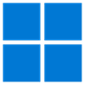
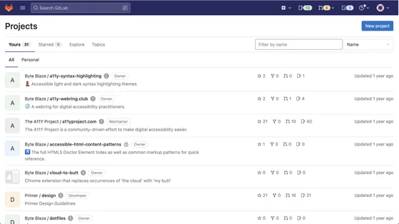
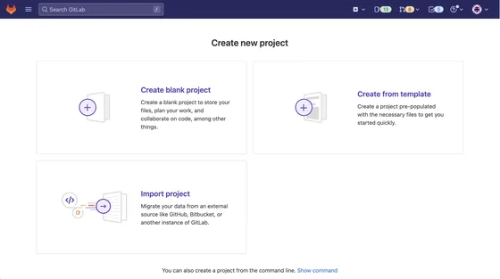
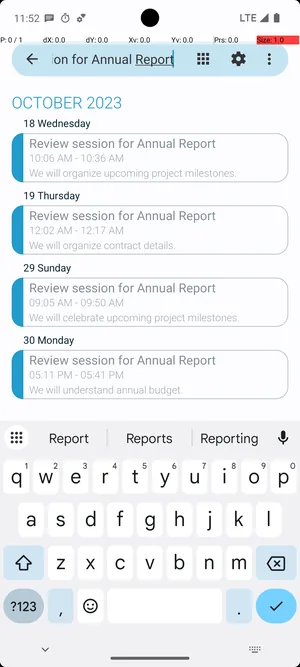

- 2026-08 We release the OSReward benchmark, the OS-Shepherd-100K corpus, the OS-Shepherd 9B / 35B checkpoints and the evaluation code.
- 2026-07 The paper is out on arXiv and Hugging Face, and this project page is live.
How reliable is a VLM judge for CUA trajectories?
Who grades the agent?
Hand-written verifiers only work inside curated sandboxes, one task at a time, and cannot score a static corpus once the live environment is gone. Human annotation takes hundreds of hours for a thousand runs. By necessity, the field has put vision-language models in the judge's seat. It grades benchmarks, filters synthetic rollouts, and supplies the reward in reinforcement learning.
Screens, thoughts, and actions, step by step, up to 100 steps.
Reads the trace and calls whether the instruction was met.
One bit, and every downstream stage inherits its mistakes.
- Evaluationscoring agents
- Data curationfiltering rollouts
- RL rewardtraining signal
Why the data has to be new
Auditing a CUA judge is harder than testing a text autorater. You cannot simply recycle trajectories from existing agent benchmarks: when a judge disagrees with a brittle rule-based script on a noisy run, there is no way to tell whether the judge failed or the trajectory did. Isolating the judge requires building the data for that exact purpose.
Not measurable before
Human-written verifiers cover a handful of curated tasks and cannot inspect a static corpus at all. Human annotation cannot keep pace. A model judge is the only practical route, and its own reliability had gone untested.
Harder than judging text
A CUA verdict means reading a long, interleaved record of states, actions, and reasoning, then deciding whether the environment truly reached the goal rather than whether the agent merely claims it did.
Built from scratch
Reusing existing benchmarks' rollouts would confound judge errors with flaws in the runs. OSReward is built on dedicated cross-platform infrastructure so every wrong verdict is attributable to the judge.
Measure the judge, then fix it
The evaluation becomes open training data and affordable reward models.
-
01A standardized benchmark for the CUA reward signal
1,019 human-gold trajectories collected end to end across web, Windows, Ubuntu, and mobile, each labeled by three annotators with senior meta-review on splits, and read through OSReward, OSReward-Hard, and OSReward-Multi.
-
02The broadest evaluation of VLM judges for CUA to date
27 models tested under one fixed protocol. Every family shares one lenient failure mode, leans on text history over the screen, and drops sharply on hard cases. The few reliable judges cost too much to scale.
-
03OS-Shepherd-100K, shaped by those findings
100K reasoning-annotated trajectory judgments distilled from 321,631 ensemble verdicts over fresh rollouts and four open corpora, keeping only the runs where strong teachers independently agree.
-
04Open reward models a lab can host
OS-Shepherd 9B and 35B, trained with SFT and targeted RL against the false-success mode, reaching commercial-judge performance at 30–60× lower inference cost.
A gold set built for judging the judge
Lived-in machines on four platforms, human-vetted instructions, rollouts from four agent families, and three independent annotators per trajectory: roughly 800 human hours.
Lived-in machines, not stock images
A benchmark is only as honest as the environments behind it. Stock virtual machines are bare. Real computer use happens on machines with a history. Before collecting a single trajectory, annotators built out Windows, Ubuntu, and Android machines with twenty to thirty everyday and professional applications, signed-in accounts, real user files, seeded databases, and distractor content, alongside live websites on the open internet. Roughly 1,500 candidate instructions were written and peer-checked down to ~800 grounded tasks, rolled out across Claude, Gemini, Kimi, and Qwen agents, cleared of infrastructure crashes, and adjudicated by human readers.
From realistic environments to the gold benchmark
Click any stage in the diagram, or press play, to follow how a lived-in environment becomes a gold trajectory. Note Stage 7: an answer the agent did not obtain or verify through the environment is a FAIL, even when it happens to be right.
Realistic environments

lived-in machines, realistic
apps and live websites
Annotator setup
learn the apps, move in:
profiles, files, seeded state
Instructions
written & cross-checked
Agent rollout
with diverse backbones
Raw trajectories
screenshot · thought · action
up to 100 steps
Pre-filter
environment casualties
dropped automatically
Three annotators
independent verdicts,
a written reason each
Meta-review
two senior reviewers
deliberate the splits
OSReward
OSReward-Hard
the cases that split humans
30 / 70 success / fail
OSReward-Multi
trajectory-level alignment
and efficiency
-
1 A lived-in machine
Stock benchmark images are extended into lived-in machines with real files, user profiles, seeded databases and distractor content. Web tasks run on live sites.
real files user profiles seeded databases distractors live websites -
2 Annotators move in
Annotators learn the apps, build profiles, and seed files and state, so every task starts on a machine with a history.
-
3 Instructions, cross-checked
Written against what the environment can verify: grounded, answerable, open-ended. Peer review cuts ~1,500 drafts to ~800 tasks.
fibonacci.py → LaTeX formula, render in TeXstudio → Impress PyCharm run config: main.py, env DEBUG_MODE=False “Make the video look better”: no verifiable end state -
4 Agents roll out
Each task runs on one to three executing agents across the Claude, Gemini, Kimi and Qwen families, so no single agent’s style dominates the data.
-
5 Raw trajectories
Each run is the trace a judge will read (screenshot, thought, action), up to 100 steps long.


-
6 The pre-filter
Runs wrecked by the environment (anti-bot blocks, network failures, frozen executions) are dropped before any human time is spent.
-
7 Three annotators, independently
Three independent verdicts per trajectory, each with a written reason. One strict rule: an answer the agent did not obtain or verify through the environment is a FAIL, even when it happens to be correct.
SUCCESS SUCCESS FAIL + reason, every time -
8 Unanimous, or escalated
Unanimous verdicts are final. Splits escalate. No gold verdict rests on a single reader.
-
9 Meta-review
Two senior reviewers deliberate. It is not a vote. Extra steps that still reach the goal pass. A wrong action fails. Residual-quality runs are discarded.
extra steps, still correct goal basically reached an action is wrong -
10 The gold set
OSReward: 1,019 gold trajectories across four platforms, balanced 43 / 57 success / fail. SUCCESS carries alignment and efficiency grades. FAIL carries an error type: action, perception, planning & reasoning, or memory.
Web Windows 
Ubuntu 
Mobile -
11 OSReward-Hard
The cases that split the annotators, re-verified in a further review (real difficulty, not annotation noise), at a 30 / 70 success / fail split.
-
12 OSReward-Multi
Successful trajectories receive trajectory-level alignment and efficiency ratings. Together: three views of one gold set.
One gold set, three views
The full benchmark measures everyday reliability across platforms and action spaces. The challenge subset concentrates the deceptive runs that split our own annotators. The multi-axis track grades execution quality on the runs that did succeed.
OSReward
The full set: 1,019 trajectories across four platforms, four agent families, and GUI-only plus GUI+CLI action spaces, ranging from concise few-step chores to 100-step cross-app workflows (mean 30.1 steps). Balanced 43 / 57 success / fail so binary accuracy cannot coast on the majority class.
OSReward-Hard
284 challenging trajectories drawn mostly from annotator disagreements and re-verified by senior reviewers. It keeps cases where the outcome is determinate but establishing it requires piecing together subtle visual and textual evidence. Heavy on deceptive failures (30 / 70 success / fail).
OSReward-Multi
All 440 successful trajectories carry 0, 0.5, or 1 human ratings on two complete-trajectory axes: alignment (did every action serve the user's intent without side effects) and efficiency (how free the path was of wasted detours), quality dimensions binary verdicts miss.
Outcome composition
The Hard set deliberately raises the share of failures, to expose how easily judges are fooled by false successes. Failed runs are markedly longer, a first sign that length confounds verification.
Platform mix
Ubuntu contributes the most trajectories and is the only platform collected in both a pure-GUI and a GUI+CLI action space.
All 1,019 trajectories, one cell each
Summary plots hide what individual runs look like on the ground. Every cell below is one trajectory in OSReward. Regroup the grid by platform, executing agent, human verdict, or step length. Switch Colour to Length and you can see immediately how failed runs drag out far longer than clean completions. Hover any cell for its instruction and action barcode (one coloured tick per click, keystroke, scroll, or command). Gold-ringed cells open straight into the interactive player below.
Be the judge
Make the call yourself
Before looking at how 27 models scored, try making the call yourself. Step through a trajectory the way a reward model sees it: the instruction, every recorded screen with the agent's action drawn on top, and the agent's stated reasoning beside it. Make your call while the annotations are still hidden, then see what the human annotators decided, which frames settled it, and how the model judges voted. Ten cases are the paper's diagnostic studies. Eleven more are hard picks from the benchmark where the final screen or the agent's closing report points the wrong way.
Seeing a single deceptive run makes the trap obvious: an agent can narrate a convincing finish while leaving the real environment half-done. What happens when we run 27 vision-language models across all 1,019 trajectories?
Next The judge study ↓Four things the judge study settles
One protocol, 27 judges
We benchmark 27 VLM judges under one shared protocol: the task instruction, the full history of agent thoughts and actions, and the last five screenshots (N = 5), with click locations marked on screen and no task-specific harness.
Closed frontier judges top out just under 90% binary accuracy on the full set (Claude-Opus-4-8 at 89.7%, GPT-5.5 at 89.5%), with open-weight models trailing behind. On OSReward-Hard, every judge drops by 20–43 pp, pulling the field mean down to 52%.
Every judge family shares one dominant failure: accepting an incomplete task as a success. It is two-thirds of all errors, leads every model's mistake profile at no less than 48% of its errors, and outnumbers over-rejects more than three to one.
The verdict leans heavily on the text history. Dropping per-step thought and action text costs 7.3 pp on average and flips 22.7% of verdicts. Dropping all screenshots costs 6.0 pp, whereas swapping the last five frames for three (or first-plus-last-two) moves accuracy by under 0.5 pp.
Reliability can be bought, but not afforded. The few judges that hold ~70% on OSReward-Hard cost $45–100 to judge the full set once, out of reach at the millions of calls RL training issues.
The accuracy ceiling and the cost bind
Clustering near 90% on the full set looks reassuring until you switch the table below to OSReward-Hard. Because the hard set is 70% failures, a trivial predictor that says FAIL to everything already gets 69.7% raw accuracy (and 50% balanced accuracy). Even the strongest frontier judge only matches that raw mark, and several open models sit at coin-flip balanced accuracy (50.1–51.4%). Plotting hard-set accuracy against API cost shows the bind: reliable judges sit at $45–$100 per pass, while every judge under $3 outside OS-Shepherd stays at or below 57%.
Main-setting results
Low success recall (sRec) means a strict judge, and low failure recall (fRec) a lenient one. Balanced accuracy (BalAcc) is their mean. Toggle between Full and Hard or click any column header to sort.
Cost against accuracy
Accuracy and cost are in direct tension, sharpest on OSReward-Hard. The dashed line traces the frontier: the best accuracy reachable at each price. The OS-Shepherd models are the low-cost points nearest it.
The whole field leans lenient
Binary accuracy hides how a judge errs. Place every model at its recall on truly failed runs against its recall on truly successful ones, and almost every point sits above the diagonal: judges accept far more failures than they reject successes. Labelling every wrong verdict into six concrete modes pinpoints why. Across every model family, the single leading mistake is passing an incomplete task whose closing text claims success.
Strict–lenient plane
Above the dashed diagonal is lenient (a failed run scored SUCCESS), below is strict. Switch to OSReward-Hard and the cloud drifts left: leniency does not just persist on hard cases, it widens. Hover any point, or click a family to mute it.
What judges get wrong
Every incorrect verdict, labeled into over-accepts and over-rejects with three modes each. One mode dominates every family: over-accepting a task the agent never completed. That is the mechanism behind the leniency bias: the verdict leans on the agent's own closing claim.
Text drives the call, so visual slips slip through
Perturbing one input at a time explains why confident agent narration fools so many judges. Removing step-level text dominates every other ablation, especially on the web, where typed strings carry intent a screenshot cannot show. Visual evidence still matters (removing all screenshots costs 6.0 pp across tested judges), yet changing which trailing screenshots the judge sees barely moves aggregate accuracy while quietly flipping 5–7% of individual verdicts. Because judges lean on text, they struggle most where the screen is the only witness: dense Windows software, and perception or action errors that leave no trace in the agent's reasoning.
What actually drives a verdict
Change in binary accuracy against the main setting, one input component perturbed at a time. Removing step-level text dominates. Varying the screenshot selection or action markers barely registers on the mean, yet still flips 5–7% of individual verdicts, which matters when a reward model consumes labels one by one.
Where the hard set bites
Mean per-judge binary accuracy on OSReward-Hard. Windows is the hardest platform to judge and mobile the easiest. Failures that hinge on reading the screen (perception, then action) are markedly harder to catch than planning-and-reasoning failures legible in text. Failure types are multi-label.
Fine-grained grading and the limits of test-time scaling
Grading alignment and efficiency on completed runs (OSReward-Multi) is harder still, dropping the best judges from ~90% into the low sixties. And when we try to buy reliability at inference time, by raising reasoning effort, sampling repeatedly, or pooling top judges into a majority vote, the gains stall out because different model families herd on the exact same deceptive trajectories.
Finer-grained grading
On OSReward-Multi every judge additionally rates alignment and efficiency when it predicts SUCCESS. The AUC–macro-recall gap is the diagnostic: judges rank the levels better than they score them, so discrimination is there but thresholds are miscalibrated, worst on alignment.
| Macro-recall | ||||
|---|---|---|---|---|
| Judge | Align | Effic | Multi | AUC |
Judge agreement and ensembling
No model-side knob buys reliability.
- κ ≈ 0.71 pairwise agreement among top judges. They herd on the same hard trajectories, so a wider pool mostly adds copies of the same mistake.
- 6–9% of verdicts flip when the same judge reruns on the same input at T = 0.7. Aggregate accuracy is stable under temperature. Individual labels are not, and that is what a reward model consumes.
- +1 pp is what a top-3 majority vote buys over the best single judge, at several times the cost.
- 99.2% is the oracle, accepting any pooled judge's correct verdict. The pool almost always contains a correct answer. What a vote cannot recover is which judge to trust on which trajectory.
An open reward model a lab can run on an academic budget
Trained on an open 100K reasoning corpus built from cross-model agreement, aimed squarely at false successes, and 30–60× cheaper to run.
Turning agreement into supervision: OS-Shepherd-100K
At evaluation time, majority voting disappoints because you must score every benchmark run, including the hard cases where judges herd on the wrong answer. Corpus construction has one crucial freedom evaluation lacks: we can discard disagreements. We roll out fresh instructions across five agent families, join them with four open trajectory corpora, and label each trajectory independently with three strong teachers: GPT-5.5, Gemini-3.1-Pro, and Kimi-K2.5. Keeping only unanimous verdicts retains ~85% of evaluated runs while raising label accuracy to 94.0% on OSReward Full (and 96.0% agreement with human majority labels in a 100-trajectory audit). Every kept sample pairs its verdict with an agreeing teacher's full reasoning trace.
How the corpus is built
Self-collected instructions are filtered, rolled out, and joined with open-source trajectories. The pool is then ensemble-judged, and only unanimous verdicts are kept. The first four columns count unique trajectories (up to 82K). After that the unit changes: a judge instance is one teacher's verdict on one trajectory (321K), and the final corpus is counted in retained trajectory–response training samples (~100K).
Two stages, two jobs
Starting from Qwen3.5 (9B and 35B-A3B), stage one runs supervised fine-tuning on 96.6K agreement-filtered samples across mixed screenshot settings. SFT does the bulk of the accuracy work, lifting the 9B out of near-total leniency. What survives SFT is the hardest tail of false successes, runs the SFT checkpoint still waves through under greedy decoding, yet catches in some sampled rollouts. Using the one-epoch SFT checkpoint, we mine ~3.1K of these recoverable errors from the SFT pool for a short GRPO pass. RL leaves overall discrimination intact and relocates the operating point onto the balanced diagonal, driving 9B hard-set failure recall from 14.1% to 57.6%.
OS-Shepherd-100K
The 321,631-instance judge pool across web, Windows, macOS, Ubuntu, and Android. About 46% of the Ubuntu data interleaves GUI actions with CLI steps, preparing the reward model for hybrid code-and-GUI agents.
Two-stage recipe
Start from Qwen3.5. Build accurate judging first, then target the sharpest failure the study exposes.
SFT stage
Fine-tune on the agreement-filtered corpus to judge under the main setting. This alone lifts the 9B far above its base, primarily by correcting the base model's near-total leniency.
RL stage
What SFT leaves behind is the false success, the most harmful error for a reward signal, since it directly reinforces incorrect behavior. The ability to catch it is latent rather than missing, so those cases are mined and optimized with GRPO.

OS-Shepherd-9B
Moves from the bottom third of the field into the commercial band on the full set (86.1%) and holds the balanced diagonal on OSReward-Hard, catching 57.6% of hard false successes where cheap open judges miss nearly all of them. At $1.36 to judge the full set, it is 30–60× cheaper than frontier APIs and a third less than its nearest commercial peer.
- OSReward accuracy
- 86.1+9.4
- OSReward-Hard accuracy
- 60.2+20.8
- Hard fail recall
- 57.6+43.5
- Base
- Qwen3.5-9B
OS-Shepherd-35B-A3B
The identical recipe at four times the parameters lands beside the 9B: a small further gain on OSReward-Hard, level full-set accuracy, the same balanced diagonal. Scale buys 2.4 pp of hard-set balanced accuracy. What transfers is the recipe. On the fine-grained quality axes it grades noticeably better than the 9B.
- OSReward accuracy
- 85.6+3.4
- OSReward-Hard accuracy
- 62.7+11.6
- Hard fail recall
- 60.1+23.2
- Base
- Qwen3.5-35B-A3B
Against the untuned base
Both base models are near-total accepters: the 9B base catches just 14.1% of hard failures. Training relocates the operating point rather than trading one error for another: far more failure recall, a modest dip in success recall, and a clear jump in balanced accuracy.
| OSReward | OSReward-Hard | |||||||
|---|---|---|---|---|---|---|---|---|
| Model | Acc | sRec | fRec | BalAcc | Acc | sRec | fRec | BalAcc |
De-biasing that travels
Does resistance to false successes hold up outside OSReward? We test OS-Shepherd two ways without touching its weights: against the programmatic verifiers of three unseen benchmarks (OSWorld, WebArena, AndroidWorld), and against independent human annotations on external desktop and web reward benchmarks (CUARewardBench and AgentRewardBench). Untuned Qwen models stay lenient at every size up to 397B. OS-Shepherd-9B keeps catching failures on data it never saw.
Held-out benchmarks
Agreement with each benchmark's own human-written verifier on held-out subsets. Agreement is platform-driven: every judge does best on mobile and drops on desktop. The OS-Shepherd models are the best open judges on OSWorld and AndroidWorld and sit in the frontier cluster on WebArena, beating general open models up to ~44× the 9B's size.
Leniency resistance transfers
Recall on truly failed runs. General Qwen judges stay lenient at every size from 30B to 397B, while OS-Shepherd-9B catches far more real failures on all three. None of these benchmarks' test tasks or trajectories enter training. OSWorld contributes neither, making it the cleanest out-of-distribution test.
External human-annotated benchmarks
The same last-five-screenshot protocol, scored against independent human labels: CUARewardBench (desktop, 272 runs) and AgentRewardBench (web, 1,106 runs). sPrec is the share of accepted runs that truly succeeded, and fRec the share of failed runs the judge catches.
| Benchmark & judge | Acc | sPrec | fRec |
|---|---|---|---|
| CUARewardBench · GLM-4.5V-106B | 80.1 | 82.9 | 83.5 |
| CUARewardBench · Qwen3.5-9B (base) | 76.5 | 71.2 | 61.7 |
| CUARewardBench · OS-Shepherd-9B | 80.5 | 83.1 | 83.5 |
| AgentRewardBench · GPT-4o | — | 69.8 | 86.9 |
| AgentRewardBench · WebJudge-7B | — | 75.7 | 93.2 |
| AgentRewardBench · Qwen3.5-9B (base) | — | 69.3 | 87.1 |
| AgentRewardBench · OS-Shepherd-9B | — | 81.7 | 95.1 |
What travels is the recipe, not the benchmark. A 9B judge trained against false successes stays strict on data it never saw, at a price that fits inside an RL loop.
Open code, data and models
The benchmark, the training corpus, both reward models and the evaluation code are all released.
OSReward
1,019 gold trajectories with verdicts, plus the Hard and Multi views.
OS-Shepherd-100K
Reasoning-annotated judgments, kept from 321,631 judge instances by ensemble agreement.
OS-Shepherd 9B / 35B
Open, self-hostable reward models. Weights plus the judging prompt.
Code
Evaluation harness, the judging protocol, and the training recipe.
BibTeX
@article{sun2026osreward,
title={OSReward: Instituting Standardized Evaluation for Cross-Platform Computer-Use Reward Models},
author={Sun, Qiushi and Cheng, Kanzhi and Wang, Yian and Yang, Bowen and Yan, Hang and
Chen, Liheng and Xu, Fangzhi and Ding, Zichen and Chen, Nuo and Cao, Jialin and
Gong, Xingdong and Li, Zehao and Jin, Kaiming and Yuan, Xinfeng and Liu, Zhoumianze and
Gong, Jingyang and Yin, Zhangyue and Gao, Jiahui and Wu, Zhiyong and Xie, Tianbao and
Zhang, Jianbing and Kao, Ben and Kong, Lingpeng},
journal={arXiv preprint arXiv:2607.28609},
year={2026}
}